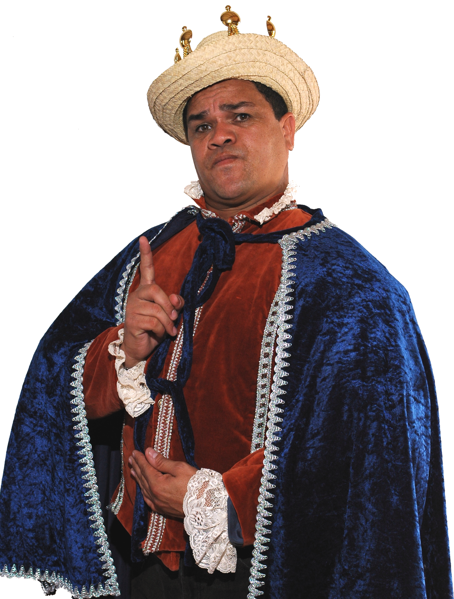

Benjamin Rausseo

Venezuelan comedian Benjamin Rausseo in his "Count of Guacharo" outfit.
Benjamin Rausseo was born in Musipan, Monagas Venezuela on January 26 1961. Comedian, politician, actor, lawyer, entrepeneur and filmmaker. Recognized nationally and internationally as his character "Er Conde del Guacharo"
10 Curious Facts About Benjamin "Er Conde" Rausseo
- Started at an early age selling newspapers in the Puerto La Cruz markets.
- Studied theatre under Levy Rossell, who saw success for the character of Er Conde.
- His first TV appearance was on a game show called Esstudio 30 with Guillermo Gonzales.
- Benjamin Rausseo presented a monologue in front of more than 70,000 people in a Guns N' Roses concert on 1992.
- "Guacharos Telefonica" was a prepaid card distributed in the United States with an image of Er conde.
- Launched an album "Solo Boleros" which debut his artistic name for the very frst time.
- The only Latin American artist to record a disk of traditional rithm of Portugal.
- In 2005 he became the only hispanic comedian to ever throw the first pitch of an MLB game in the Marlins stadium in Florida
- His movie "Er Conde Jones" is ranked 11 on movies with the most national audience.
- Er Conde Bond is the first venezuelan movie to ever be recorded in english and spanish simultaneously.
When dreams come from the heart, there is no rest until they become a reality.
Click Here to learn more about this Venezuelan icon.